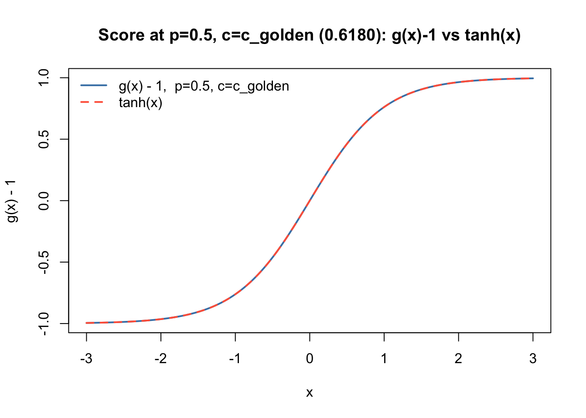
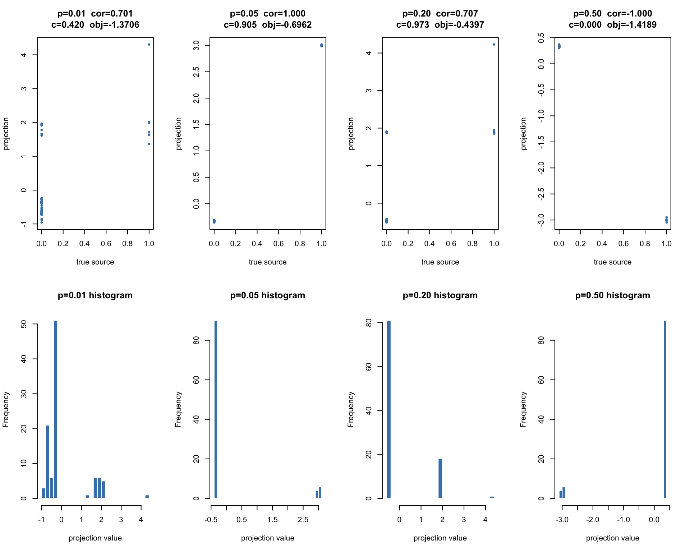
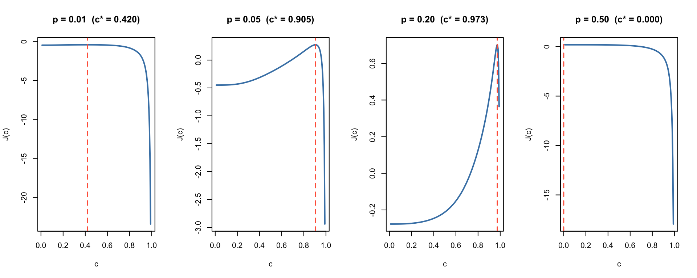
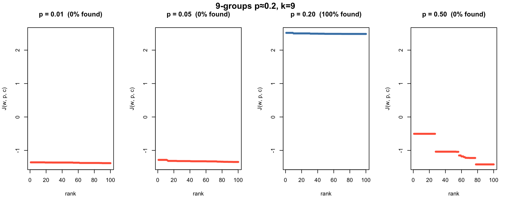
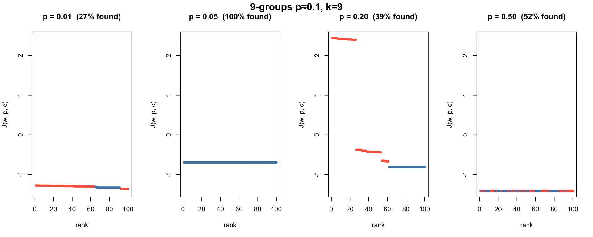
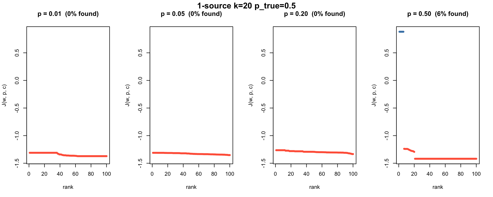
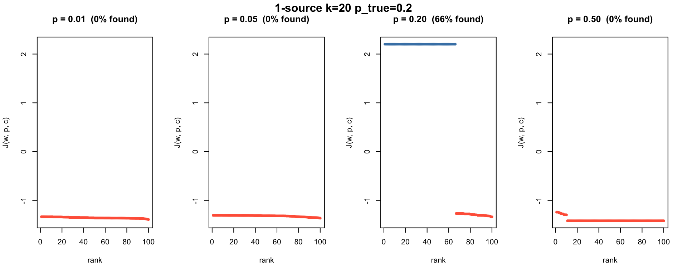
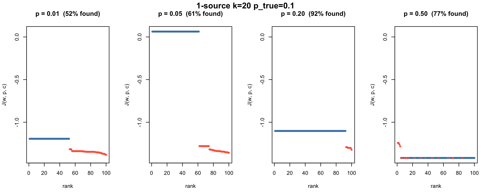

Last updated: 2026-08-03
Checks: 7 0
Knit directory: misc/analysis/
This reproducible R Markdown analysis was created with workflowr (version 1.7.2). The Checks tab describes the reproducibility checks that were applied when the results were created. The Past versions tab lists the development history.
Great! Since the R Markdown file has been committed to the Git repository, you know the exact version of the code that produced these results.
Great job! The global environment was empty. Objects defined in the global environment can affect the analysis in your R Markdown file in unknown ways. For reproduciblity it’s best to always run the code in an empty environment.
The command set.seed(1) was run prior to running the
code in the R Markdown file. Setting a seed ensures that any results
that rely on randomness, e.g. subsampling or permutations, are
reproducible.
Great job! Recording the operating system, R version, and package versions is critical for reproducibility.
Nice! There were no cached chunks for this analysis, so you can be confident that you successfully produced the results during this run.
Great job! Using relative paths to the files within your workflowr project makes it easier to run your code on other machines.
Great! You are using Git for version control. Tracking code development and connecting the code version to the results is critical for reproducibility.
The results in this page were generated with repository version 53c8a87. See the Past versions tab to see a history of the changes made to the R Markdown and HTML files.
Note that you need to be careful to ensure that all relevant files for
the analysis have been committed to Git prior to generating the results
(you can use wflow_publish or
wflow_git_commit). workflowr only checks the R Markdown
file, but you know if there are other scripts or data files that it
depends on. Below is the status of the Git repository when the results
were generated:
Ignored files:
Ignored: .DS_Store
Ignored: .Rhistory
Ignored: .Rproj.user/
Ignored: .claude/
Ignored: GSE87571/
Ignored: analysis/.RData
Ignored: analysis/.Rhistory
Ignored: analysis/ALStruct_cache/
Ignored: analysis/ebproj_01.html
Ignored: data/.Rhistory
Ignored: data/methylation-data-for-matthew.rds
Ignored: data/pbmc/
Ignored: data/pbmc_purified.RData
Untracked files:
Untracked: .dropbox
Untracked: GSE41037/
Untracked: Icon
Untracked: Rplots.pdf
Untracked: analysis/GHstan.Rmd
Untracked: analysis/GTEX-cogaps.Rmd
Untracked: analysis/PACS.Rmd
Untracked: analysis/Rplot.png
Untracked: analysis/SPCAvRP.rmd
Untracked: analysis/abf_comparisons.Rmd
Untracked: analysis/admm_02.Rmd
Untracked: analysis/admm_03.Rmd
Untracked: analysis/bispca.Rmd
Untracked: analysis/cache/
Untracked: analysis/cholesky.Rmd
Untracked: analysis/compare-transformed-models.Rmd
Untracked: analysis/cormotif.Rmd
Untracked: analysis/cp_ash.Rmd
Untracked: analysis/eQTL.perm.rand.pdf
Untracked: analysis/eb_power2.Rmd
Untracked: analysis/eb_prepilot.Rmd
Untracked: analysis/eb_var.Rmd
Untracked: analysis/ebpmf1.Rmd
Untracked: analysis/ebpmf_sla_text.Rmd
Untracked: analysis/ebproj_01.Rmd
Untracked: analysis/ebproj_newton.Rmd
Untracked: analysis/ebspca_sims.Rmd
Untracked: analysis/explore_psvd.Rmd
Untracked: analysis/fa_check_identify.Rmd
Untracked: analysis/fa_iterative.Rmd
Untracked: analysis/fastica_heated.Rmd
Untracked: analysis/fastica_unwhitened.Rmd
Untracked: analysis/flash_cov_overlapping_groups_init.Rmd
Untracked: analysis/flash_test_tree.Rmd
Untracked: analysis/flashier_newgroups.Rmd
Untracked: analysis/flashier_nmf_triples.Rmd
Untracked: analysis/flashier_pbmc.Rmd
Untracked: analysis/flashier_snn_shifted_prior.Rmd
Untracked: analysis/greedy_ebpmf_exploration_00.Rmd
Untracked: analysis/ieQTL.perm.rand.pdf
Untracked: analysis/lasso_em_03.Rmd
Untracked: analysis/m6amash.Rmd
Untracked: analysis/mash_bhat_z.Rmd
Untracked: analysis/mash_ieqtl_permutations.Rmd
Untracked: analysis/matrix_beta.Rmd
Untracked: analysis/meth_flash_01.Rmd
Untracked: analysis/methylation_example.Rmd
Untracked: analysis/mixsqp.Rmd
Untracked: analysis/mr.ash_lasso_init.Rmd
Untracked: analysis/mr.mash.test.Rmd
Untracked: analysis/mr_ash_modular.Rmd
Untracked: analysis/mr_ash_parameterization.Rmd
Untracked: analysis/mr_ash_ridge.Rmd
Untracked: analysis/mv_gaussian_message_passing.Rmd
Untracked: analysis/nejm.Rmd
Untracked: analysis/nmf_bg.Rmd
Untracked: analysis/nonneg_underapprox.Rmd
Untracked: analysis/normal_conditional_on_r2.Rmd
Untracked: analysis/normalize.Rmd
Untracked: analysis/pbmc.Rmd
Untracked: analysis/pca_binary_weighted.Rmd
Untracked: analysis/pca_l1.Rmd
Untracked: analysis/poisson_nmf_approx.Rmd
Untracked: analysis/poisson_shrink.Rmd
Untracked: analysis/poisson_transform.Rmd
Untracked: analysis/qrnotes.txt
Untracked: analysis/ridge_iterative_02.Rmd
Untracked: analysis/ridge_iterative_splitting.Rmd
Untracked: analysis/samps/
Untracked: analysis/sc_bimodal.Rmd
Untracked: analysis/shrinkage_comparisons_changepoints.Rmd
Untracked: analysis/susie_cov.Rmd
Untracked: analysis/susie_en.Rmd
Untracked: analysis/susie_z_investigate.Rmd
Untracked: analysis/svd-timing.Rmd
Untracked: analysis/temp.RDS
Untracked: analysis/temp.Rmd
Untracked: analysis/test-figure/
Untracked: analysis/test.Rmd
Untracked: analysis/test.Rpres
Untracked: analysis/test.md
Untracked: analysis/test_qr.R
Untracked: analysis/test_sparse.Rmd
Untracked: analysis/tree_dist_top_eigenvector.Rmd
Untracked: analysis/z.txt
Untracked: code/coordinate_descent_symNMF.R
Untracked: code/multivariate_testfuncs.R
Untracked: code/rqb.hacked.R
Untracked: data/4matthew/
Untracked: data/4matthew2/
Untracked: data/E-MTAB-2805.processed.1/
Untracked: data/ENSG00000156738.Sim_Y2.RDS
Untracked: data/GDS5363_full.soft.gz
Untracked: data/GSE41265_allGenesTPM.txt
Untracked: data/Muscle_Skeletal.ACTN3.pm1Mb.RDS
Untracked: data/P.rds
Untracked: data/Thyroid.FMO2.pm1Mb.RDS
Untracked: data/bmass.HaemgenRBC2016.MAF01.Vs2.MergedDataSources.200kRanSubset.ChrBPMAFMarkerZScores.vs1.txt.gz
Untracked: data/bmass.HaemgenRBC2016.Vs2.NewSNPs.ZScores.hclust.vs1.txt
Untracked: data/bmass.HaemgenRBC2016.Vs2.PreviousSNPs.ZScores.hclust.vs1.txt
Untracked: data/eb_prepilot/
Untracked: data/finemap_data/fmo2.sim/b.txt
Untracked: data/finemap_data/fmo2.sim/dap_out.txt
Untracked: data/finemap_data/fmo2.sim/dap_out2.txt
Untracked: data/finemap_data/fmo2.sim/dap_out2_snp.txt
Untracked: data/finemap_data/fmo2.sim/dap_out_snp.txt
Untracked: data/finemap_data/fmo2.sim/data
Untracked: data/finemap_data/fmo2.sim/fmo2.sim.config
Untracked: data/finemap_data/fmo2.sim/fmo2.sim.k
Untracked: data/finemap_data/fmo2.sim/fmo2.sim.k4.config
Untracked: data/finemap_data/fmo2.sim/fmo2.sim.k4.snp
Untracked: data/finemap_data/fmo2.sim/fmo2.sim.ld
Untracked: data/finemap_data/fmo2.sim/fmo2.sim.snp
Untracked: data/finemap_data/fmo2.sim/fmo2.sim.z
Untracked: data/finemap_data/fmo2.sim/pos.txt
Untracked: data/logm.csv
Untracked: data/m.cd.RDS
Untracked: data/m.cdu.old.RDS
Untracked: data/m.new.cd.RDS
Untracked: data/m.old.cd.RDS
Untracked: data/mainbib.bib.old
Untracked: data/mat.csv
Untracked: data/mat.txt
Untracked: data/mat_new.csv
Untracked: data/matrix_lik.rds
Untracked: data/paintor_data/
Untracked: data/running_data_chris.csv
Untracked: data/running_data_matthew.csv
Untracked: data/temp.txt
Untracked: data/y.txt
Untracked: data/y_f.txt
Untracked: data/zscore_jointLCLs_m6AQTLs_susie_eQTLpruned.rds
Untracked: data/zscore_jointLCLs_random.rds
Untracked: explore_udi.R
Untracked: output/fit.k10.rds
Untracked: output/fit.nn.pbmc.purified.rds
Untracked: output/fit.nn.rds
Untracked: output/fit.nn.s.001.rds
Untracked: output/fit.nn.s.01.rds
Untracked: output/fit.nn.s.1.rds
Untracked: output/fit.nn.s.10.rds
Untracked: output/fit.snn.s.001.rds
Untracked: output/fit.snn.s.01.nninit.rds
Untracked: output/fit.snn.s.01.rds
Untracked: output/fit.varbvs.RDS
Untracked: output/fit2.nn.pbmc.purified.rds
Untracked: output/glmnet.fit.RDS
Untracked: output/snn07.txt
Untracked: output/snn34.txt
Untracked: output/test.bv.txt
Untracked: output/test.gamma.txt
Untracked: output/test.hyp.txt
Untracked: output/test.log.txt
Untracked: output/test.param.txt
Untracked: output/test2.bv.txt
Untracked: output/test2.gamma.txt
Untracked: output/test2.hyp.txt
Untracked: output/test2.log.txt
Untracked: output/test2.param.txt
Untracked: output/test3.bv.txt
Untracked: output/test3.gamma.txt
Untracked: output/test3.hyp.txt
Untracked: output/test3.log.txt
Untracked: output/test3.param.txt
Untracked: output/test4.bv.txt
Untracked: output/test4.gamma.txt
Untracked: output/test4.hyp.txt
Untracked: output/test4.log.txt
Untracked: output/test4.param.txt
Untracked: output/test5.bv.txt
Untracked: output/test5.gamma.txt
Untracked: output/test5.hyp.txt
Untracked: output/test5.log.txt
Untracked: output/test5.param.txt
Unstaged changes:
Modified: .gitignore
Modified: analysis/eb_snmu.Rmd
Modified: analysis/ebnm_binormal.Rmd
Modified: analysis/ebpower.Rmd
Modified: analysis/flashier_log1p.Rmd
Modified: analysis/flashier_sla_text.Rmd
Modified: analysis/logistic_z_scores.Rmd
Modified: analysis/mr_ash_pen.Rmd
Modified: analysis/nmu_em.Rmd
Modified: analysis/susie_flash.Rmd
Modified: analysis/tap_free_energy.Rmd
Modified: misc.Rproj
Note that any generated files, e.g. HTML, png, CSS, etc., are not included in this status report because it is ok for generated content to have uncommitted changes.
These are the previous versions of the repository in which changes were
made to the R Markdown (analysis/fastica_asymmetric_02.Rmd)
and HTML (docs/fastica_asymmetric_02.html) files. If you’ve
configured a remote Git repository (see ?wflow_git_remote),
click on the hyperlinks in the table below to view the files as they
were in that past version.
| File | Version | Author | Date | Message |
|---|---|---|---|---|
| Rmd | 53c8a87 | Matthew Stephens | 2026-08-03 | workflowr::wflow_publish("analysis/fastICA_asymmetric_02.Rmd") |
This is another try that I think can ultimately be ignored, as it was done before I fully understood the problem. Keeping it for completeness. Here is the prompt I started Claude with (generated in conversation with Gemini):
I want to follow up on fastica_asymmetric with a second analysis (fastica_asymmetric_02.Rmd) which takes a slightly different approach, based on what we learned. I have a writeup for you. can you implement the objective function and optimization. Please make the implementation modular, so separate out functions to update w by a newton step and optimize c by some appropriate methods. here is the writeup:
Generalizing FastICA for Asymmetric Binary Sources: A Generative Maximum Likelihood Approach
Introduction and Motivation The standard FastICA algorithm, operating on whitened data \(Y\) with the objective to maximize the non-Gaussianity of projections \(x = Yw\), often relies on the \(\log(\cosh(x))\) contrast function. This specific objective implicitly assumes a generative model where the source signal is a symmetric binary variable (Rademacher) corrupted by Gaussian noise, with the noise variance related to the signal standard deviation \(c\) by \(\sigma^2 = c\). This report outlines an extension of this framework to recover asymmetric binary sources.
Generative Model and Constraints Let the observed one-dimensional projection be \(x = u + e\) where \(u\) denotes the signal (source) and \(e\) denotes the noise. Since the whitened data \(x\) has variance 1, we assume that \(u, e\) have variance \(c^2, (1-c^2)\). The Source (\(u\)): We assume \(u\) is an asymmetric binary source taking values \(y_1\) with probability \(p\) and \(y_0\) with probability \(1-p\) and satisfying:
Zero Mean: \(\mathbb{E}[u] = (1-p)y_0 + p y_1 = 0\)
Variance \(c^2\): \(\text{Var}(u) = c^2\), where \(0 < c < 1\).
Solving this system yields: \[y_1 = c \sqrt{\frac{1-p}{p}} \quad \text{and} \quad y_0 = -c \sqrt{\frac{p}{1-p}}\] The Noise (\(e\)): \[e \sim \mathcal{N}(0, 1-c^2)\] 3. Deriving the Log-Likelihood Objective The marginal probability of observing a projection \(x_i\) is a Gaussian mixture: \[p(x_i) = (1-p) \mathcal{N}(x_i \mid y_0, 1-c^2) + p \mathcal{N}(x_i \mid y_1, 1-c^2)\] Taking the log-likelihood over \(n\) samples, expanding the squared terms, and applying the strict constraints of whitened data—specifically that \(\sum x_i^2 = n\) (since \(w^T w = 1\)) and \(\sum x_i = 0\) (since the data is centered)—allows us to drop several terms that become constants with respect to \(w\). The resulting average log-likelihood objective takes the form of a heavily shifted and scaled softplus function: \[\mathcal{J}(w, p, c) = K(p, c) + \frac{1}{n} \sum_{i=1}^n \log(1 + \exp(s_i))\] Where the internal state is \(s_i = \alpha x_i - \beta + \gamma\), parameterized by:
Proposed Optimization Strategy Directly optimizing \(\mathcal{J}(w, p, c)\) jointly over all three parameters may not be necessary (or perhaps helpful). The crucial (high-dimensional) part is optimizing \(w\), which can be done efficiently using a fastICA-like algorithm for fixed \(p,c\). The optimization landscape over \(w\) will be relatively gentle if \(c\) is intermediate, but become less so as \(c\) gets close to 1 (ideally, as we hone in on a source). For now we propose a simple nested, alternating optimization strategy: Phase 1: Coarse Grid over \(p\) We know that fastICA (\(p=0.5\)) is already quite good at finding binary sources. (It is ideally honed to find balanced sources, but somewhat fortuitously unbalanced sources are sometimes local minima of the log-likelihood, and so fastICA can also find those). Based on this it seems getting \(p\) exactly right may not not strictly necessary and so we will start by using a coarse grid (e.g., \(P = \{0.01, 0.05, 0.2, 0.5\}\)). The following phases are run independently for each \(p \in P\). Phase 2: Fixed-Variance Initialization (The “Golden” Start) To prevent early collapse toward \(c \to 1\), we temporarily fix the variance tradeoff. By enforcing the standard FastICA assumption where the noise variance equals the signal standard deviation (\(\sigma^2 = c\)), and combining this with the total variance constraint (\(\sigma^2 = 1 - c^2\)), we get: \[1 - c^2 = c \implies c^2 + c - 1 = 0\] The positive root of this equation yields a value that is the reciprocal of the golden ratio: \[c_{golden} = \frac{\sqrt{5} - 1}{2} \approx 0.618\] Fixing \(c = c_{golden}\), we optimize \(w\) using a FastICA-style approximate Newton update. Let \(g(x_i) = \alpha \sigma(s_i)\) and \(g'(x_i) = \alpha^2 \sigma(s_i)(1 - \sigma(s_i))\), where \(\sigma(\cdot)\) is the standard logistic sigmoid. The update step is: \[w^+ = \frac{1}{n} Y^T g(x) - \overline{g'} \cdot w\]\[w \leftarrow \frac{w^+}{\Vert{}w^+\Vert{}}\] We iterate this until \(w\) converges within a standard tolerance. Phase 3: Alternating Refinement of \(c\) and \(w\) Once the direction \(w\) is roughly aligned with the source, we relax the variance constraint and alternate:
Update \(c\): Fix \(w\) and \(p\). Maximize the 1D objective \(\mathcal{J}(c)\) bounded on \(c \in (0, 1)\) using a standard bounded scalar solver (e.g., Brent’s method). The objective is \(\mathcal{J}(c) = -\frac{1}{2}\log(1-c^2) - \frac{1}{2(1-p)(1-c^2)} + \frac{1}{n} \sum_{i=1}^n \text{softplus}\left( \alpha(c) x_i - \beta(c) + \gamma \right)\).
Update \(w\): Recalculate \(\alpha\) and \(\beta\) with the new \(c\), and run a few iterations of the Newton update from Phase 2. Repeat these two steps until joint convergence.
Phase 4: Final Selection Evaluate the full log-likelihood \(\mathcal{J}(w_p, p, c_p)\) for the converged candidates from each probability in the grid. Ultimately we might select the tuple that maximizes the global objective but for now we will just look at how this algorithm behaves.
The previous analysis (fastica_asymmetric) showed that standard log-cosh fastICA fails for asymmetric binary sources, and that an alternating algorithm that also optimises \(p\) substantially helps. However, that approach used an ad-hoc M-estimator or golden-ratio anchor for the variance parameter \(c\) and optimised \(p\) for fixed \(c\).
Here we take a cleaner, fully generative approach. For a projection \(x = Yw\) of whitened data, we posit:
\[x_i = u_i + e_i, \quad u_i \sim \text{Bernoulli}(p)\text{ binary (zero-mean, var }c^2\text{)}, \quad e_i \sim \mathcal{N}(0, 1-c^2)\]
and maximise the resulting marginal log-likelihood jointly over the direction \(w\), the mixing weight \(p\), and the variance allocation \(c \in (0,1)\).
The key structural insight is that the full whitened data constraint
(\(\sum x_i^2 = n\)) allows several
terms to be absorbed into constants, leaving a tractable
softplus-based objective. We then optimise it with a nested
strategy:
prewhiten = function(X, n.comp) {
X = X - rowMeans(X)
sqrt(ncol(X)) * t(svd(X)$v[, 1:n.comp])
}The prior support points satisfying zero-mean and variance \(c^2\) are
\[y_1 = c\sqrt{\frac{1-p}{p}}, \qquad y_0 = -c\sqrt{\frac{p}{1-p}}\]
and the marginal likelihood is a Gaussian mixture with shared variance \(1-c^2\). Exploiting the whitened-data constraints \(\sum x_i = 0\) and \(\sum x_i^2 = n\), the average log-likelihood simplifies to
\[\mathcal{J}(w, p, c) = K(p, c) + \frac{1}{n}\sum_{i=1}^n \text{softplus}(s_i)\]
where \(s_i = \alpha x_i - \beta + \gamma\) and
\[\alpha = \frac{c}{(1-c^2)\sqrt{p(1-p)}}, \quad \beta = \frac{c^2(1-2p)}{2(1-c^2)p(1-p)}, \quad \gamma = \log\!\frac{p}{1-p}\]
\[K(p,c) = -\tfrac{1}{2}\log(2\pi(1-c^2)) - \frac{1-p+c^2 p}{2(1-c^2)(1-p)} + \log(1-p)\]
# Alpha, beta, gamma parameters from (p, c)
asym2_params = function(p, c) {
list(
alpha = c / ((1 - c^2) * sqrt(p * (1-p))),
beta = c^2 * (1 - 2*p) / (2 * (1 - c^2) * p * (1-p)),
gamma = log(p / (1-p))
)
}
softplus = function(z) {
# log(1 + exp(z)), numerically stable for large and small z
pmax(z, 0) + log1p(exp(-abs(z)))
}
# K(p, c): additive terms in J that depend only on (p, c), not w
asym2_K = function(p, c) {
-0.5 * log(2 * pi * (1 - c^2)) -
(1 - p + c^2 * p) / (2 * (1 - c^2) * (1 - p)) +
log(1 - p)
}
# Full average log-likelihood given projections x = Y^T w
asym2_obj = function(x, p, c) {
par = asym2_params(p, c)
s = par$alpha * x - par$beta + par$gamma
asym2_K(p, c) + mean(softplus(s))
}The score \(g(x_i)\) and its derivative entering the Newton step are
\[g(x_i) = \alpha\,\sigma(s_i), \qquad g'(x_i) = \alpha^2\,\sigma(s_i)(1 - \sigma(s_i))\]
where \(\sigma(\cdot)\) is the logistic sigmoid. The fastICA-style Newton step is
\[w^+ = \frac{1}{n} Y^\top g(x) - \overline{g'(x)}\, w, \qquad w \leftarrow \frac{w^+}{\|w^+\|}\]
# One Newton step for w (fixed p, c); returns normalised w
asym2_w_step = function(Y, w, p, c) {
x = as.vector(t(Y) %*% w)
par = asym2_params(p, c)
s = par$alpha * x - par$beta + par$gamma
sig = plogis(s)
g = par$alpha * sig
gp = par$alpha^2 * sig * (1 - sig)
n = ncol(Y)
w_new = as.vector(Y %*% g) / n - mean(gp) * w
w_new / sqrt(sum(w_new^2))
}
# Iterate Newton steps until convergence (fixed p, c)
asym2_w_optimize = function(Y, w, p, c, tol = 1e-6, max_iter = 500) {
w = w / sqrt(sum(w^2))
for (iter in seq_len(max_iter)) {
w_old = w
w = asym2_w_step(Y, w, p, c)
if (1 - abs(sum(w * w_old)) < tol) break
}
w
}For fixed \(w\) and \(p\), the objective as a function of \(c\) alone is
\[\mathcal{J}(c) = -\tfrac{1}{2}\log(1-c^2) - \frac{1-p+c^2 p}{2(1-c^2)(1-p)} + \frac{1}{n}\sum_{i=1}^n \text{softplus}\!\left(\alpha(c)\,x_i - \beta(c) + \gamma\right)\]
We maximise this over \(c \in (\epsilon,
1-\epsilon)\) using R’s optimize.
# Optimize c by Brent's method (fixed projections x, and p)
asym2_c_optimize = function(x, p, eps = 1e-4) {
obj_c = function(c) {
par = asym2_params(p, c)
s = par$alpha * x - par$beta + par$gamma
-0.5 * log(1 - c^2) -
(1 - p + c^2 * p) / (2 * (1 - c^2) * (1 - p)) +
mean(softplus(s))
}
optimize(obj_c, c(eps, 1 - eps), maximum = TRUE)$maximum
}Given a fixed \(p\), run the three-phase strategy and return the converged \((w, c)\) and the final objective value.
C_GOLDEN = (sqrt(5) - 1) / 2 # ≈ 0.618
asym2_one_p = function(Y, p, w_init = NULL,
tol = 1e-6, max_iter = 50,
n_newton_refine = 10) {
m = nrow(Y)
w = if (is.null(w_init)) rnorm(m) else w_init
w = w / sqrt(sum(w^2))
# Phase 2: fix c = c_golden, optimize w to convergence
c = C_GOLDEN
w = asym2_w_optimize(Y, w, p, c)
# Phase 3: alternate c (Brent) and w (Newton)
for (iter in seq_len(max_iter)) {
w_old = w; c_old = c
x = as.vector(t(Y) %*% w)
c = asym2_c_optimize(x, p)
w = asym2_w_optimize(Y, w, p, c, max_iter = n_newton_refine)
if (1 - abs(sum(w * w_old)) < tol && abs(c - c_old) < tol) break
}
x = as.vector(t(Y) %*% w)
list(w = w, p = p, c = c, obj = asym2_obj(x, p, c), iter = iter)
}P_GRID = c(0.01, 0.05, 0.2, 0.5)
# Returns a list of results, one per p in p_grid.
# w_init is shared across all p (same starting direction).
asym2_fastica = function(Y, p_grid = P_GRID, w_init = NULL, ...) {
m = nrow(Y)
w0 = if (is.null(w_init)) { v = rnorm(m); v / sqrt(sum(v^2)) } else
w_init / sqrt(sum(w_init^2))
lapply(p_grid, \(p) asym2_one_p(Y, p, w_init = w0, ...))
}
# Convenience: run asym2_fastica and pick the result with highest obj
asym2_fastica_best = function(Y, p_grid = P_GRID, w_init = NULL, ...) {
res = asym2_fastica(Y, p_grid, w_init, ...)
best = which.max(sapply(res, `[[`, "obj"))
res[[best]]
}The generative model with \(\sigma^2 = c\) (noise variance equals signal SD) combined with the total variance constraint \(\sigma^2 = 1 - c^2\) gives \(c = c_\text{golden}\). At \(p = 0.5\), \(c = c_\text{golden}\): \(1 - c^2 = c\), so \(\alpha = c\,/\,(c\cdot\tfrac{1}{2}) = 2\), \(\beta = 0\), \(\gamma = 0\), giving \(s_i = 2x_i\) and
\[g(x_i) = 2\sigma(2x_i) = 1 + \tanh(x_i)\]
Since the data is centred, \(\tfrac{1}{n}Y^\top\mathbf{1} = 0\), so the Newton step becomes \(w^+ \propto Y^\top\tanh(x) - \overline{\mathrm{sech}^2(x)}\,w\), exactly log-cosh fastICA.
x_grid = seq(-3, 3, length.out = 300)
par05 = asym2_params(0.5, C_GOLDEN)
g05 = par05$alpha * plogis(par05$alpha * x_grid - par05$beta + par05$gamma)
plot(x_grid, g05 - 1, type = "l", col = "steelblue", lwd = 2,
xlab = "x", ylab = "g(x) - 1",
main = sprintf("Score at p=0.5, c=c_golden (%.4f): g(x)-1 vs tanh(x)", C_GOLDEN))
lines(x_grid, tanh(x_grid), col = "tomato", lty = 2, lwd = 2)
legend("topleft", c("g(x) - 1, p=0.5, c=c_golden", "tanh(x)"),
col = c("steelblue","tomato"), lty = 1:2, lwd = 2, bty = "n")
The curves are numerically identical.
The golden-ratio anchor satisfies \(c^2 + c = 1\), i.e. \(1 - c^2 = c\), so \(\alpha = c/(c \cdot \sqrt{p(1-p)}) = 1/\sqrt{p(1-p)}\) and the softplus argument at \(p = 0.5\) becomes \(2x_i\), consistent with the log-cosh link.
par05_gr = asym2_params(0.5, C_GOLDEN)
cat(sprintf("alpha at p=0.5, c_golden: %.6f (1/sqrt(p(1-p)) = %.6f)\n",
par05_gr$alpha, 1/sqrt(0.5*0.5)))alpha at p=0.5, c_golden: 2.000000 (1/sqrt(p(1-p)) = 2.000000)cat(sprintf("K(0.5, c_golden) = %.4f\n", asym2_K(0.5, C_GOLDEN)))K(0.5, c_golden) = -2.4895Run the method 100 times for a single fixed \(p\), returning the converged objective, \(c\), and correlation with the true sources for each seed.
# 100 seeds for one fixed p; returns maxcor, c, obj per seed
run_seeds_p = function(Y, S_true, p, n_seeds = 100) {
maxcor = numeric(n_seeds)
cs = numeric(n_seeds)
objs = numeric(n_seeds)
for (seed in seq_len(n_seeds)) {
set.seed(seed)
res = asym2_one_p(Y, p)
maxcor[seed] = max(abs(cor(t(S_true), t(Y) %*% res$w)))
cs[seed] = res$c
objs[seed] = res$obj
}
list(maxcor = maxcor, c = cs, obj = objs)
}
# One panel: objectives ranked descending, coloured by success
plot_obj_p = function(res, p, ...) {
succ = res$maxcor > 0.9
ord = order(res$obj, decreasing = TRUE)
cols = ifelse(succ[ord], "steelblue", "tomato")
plot(seq_along(res$obj), res$obj[ord],
pch = 19, cex = 0.6, col = cols,
xlab = "rank", ylab = "J(w, p, c)",
main = sprintf("p = %.2f (%.0f%% found)", p, 100*mean(succ)),
...)
}
# Four-panel figure: one panel per p in P_GRID
plot_by_p = function(results_list, p_grid, title) {
ylims = range(sapply(results_list, \(r) range(r$obj)))
par(mfrow = c(1, length(p_grid)))
for (i in seq_along(p_grid))
plot_obj_p(results_list[[i]], p_grid[i], ylim = ylims)
mtext(title, side = 3, line = -1.5, outer = TRUE, font = 2)
par(mfrow = c(1, 1))
}Reproduce the datasets from the first analysis.
set.seed(1)
n = 100; p_dim = 1000; K = 9
L = matrix(0, nrow = n, ncol = K)
for (i in 1:K) L[sample(n, 20), i] = 1
FF = matrix(rnorm(p_dim * K), nrow = p_dim)
X9 = t(L %*% t(FF) + matrix(rnorm(n * p_dim, 0, 0.1), nrow = n))
Z9 = prewhiten(X9, K)
S9 = t(L)
set.seed(2)
L_01 = matrix(0, nrow = n, ncol = K)
for (i in 1:K) L_01[sample(n, 10), i] = 1
FF_01 = matrix(rnorm(p_dim * K), nrow = p_dim)
X9_01 = t(L_01 %*% t(FF_01) + matrix(rnorm(n * p_dim, 0, 0.1), nrow = n))
Z9_01 = prewhiten(X9_01, K)
S9_01 = t(L_01)
set.seed(10)
n_k20 = 200; p_k20 = 1000; k20 = 20
A_k20 = matrix(rnorm(p_k20), nrow = p_k20)
S_k20_05 = matrix(sample(c(-1, 1), n_k20, replace = TRUE), nrow = 1)
X_k20_05 = A_k20 %*% S_k20_05 +
matrix(rnorm(p_k20 * n_k20, 0, 0.1), nrow = p_k20)
Z_k20_05 = prewhiten(X_k20_05, k20)
set.seed(11)
S_k20_02_raw = matrix(as.numeric(runif(n_k20) < 0.2), nrow = 1)
S_k20_02 = (S_k20_02_raw - 0.2) / sqrt(0.2 * 0.8)
X_k20_02 = A_k20 %*% S_k20_02 +
matrix(rnorm(p_k20 * n_k20, 0, 0.1), nrow = p_k20)
Z_k20_02 = prewhiten(X_k20_02, k20)
set.seed(12)
S_k20_01_raw = matrix(as.numeric(runif(n_k20) < 0.1), nrow = 1)
S_k20_01 = (S_k20_01_raw - 0.1) / sqrt(0.1 * 0.9)
X_k20_01 = A_k20 %*% S_k20_01 +
matrix(rnorm(p_k20 * n_k20, 0, 0.1), nrow = p_k20)
Z_k20_01 = prewhiten(X_k20_01, k20)Before the multi-seed experiments we run asym2_one_p
once (seed 1) for each assumed \(p\) in
the grid on the 9-groups \(p \approx
0.1\) dataset, and compare the recovered source and final
objective side by side.
set.seed(1)
w_init_ex = rnorm(K)
res_ex = lapply(P_GRID, \(p) asym2_one_p(Z9_01, p, w_init = w_init_ex))par(mfrow = c(2, length(P_GRID)))
# Top row: scatter of best recovered source vs its true source
for (i in seq_along(P_GRID)) {
x_hat = as.vector(t(Z9_01) %*% res_ex[[i]]$w)
cors = cor(t(S9_01), x_hat)
best = which.max(abs(cors))
plot(S9_01[best, ], x_hat,
pch = 19, cex = 0.5, col = "steelblue",
xlab = "true source", ylab = "projection",
main = sprintf("p=%.2f cor=%.3f\nc=%.3f obj=%.4f",
P_GRID[i], cors[best],
res_ex[[i]]$c, res_ex[[i]]$obj))
}
# Bottom row: histogram of projection values
for (i in seq_along(P_GRID)) {
x_hat = as.vector(t(Z9_01) %*% res_ex[[i]]$w)
hist(x_hat, breaks = 30, col = "steelblue", border = "white",
main = sprintf("p=%.2f histogram", P_GRID[i]),
xlab = "projection value")
}
par(mfrow = c(1, 1))cat("9-groups p≈0.1, k=9, seed 1:\n")9-groups p≈0.1, k=9, seed 1:for (i in seq_along(P_GRID)) {
x_hat = as.vector(t(Z9_01) %*% res_ex[[i]]$w)
cors = cor(t(S9_01), x_hat)
cat(sprintf(" assumed p=%.2f maxcor=%.4f c=%.4f obj=%.4f\n",
P_GRID[i], max(abs(cors)), res_ex[[i]]$c, res_ex[[i]]$obj))
} assumed p=0.01 maxcor=0.7015 c=0.4204 obj=-1.3706
assumed p=0.05 maxcor=1.0000 c=0.9051 obj=-0.6962
assumed p=0.20 maxcor=0.7070 c=0.9735 obj=-0.4397
assumed p=0.50 maxcor=0.9999 c=0.0002 obj=-1.4189To check whether c is being maximised (not minimised),
we plot \(\mathcal{J}(c)\) against
\(c\) for each assumed \(p\), using the final converged projection
\(x = Yw\) for that run. The vertical
dashed line marks the returned optimum.
c_scan = seq(0.01, 0.99, by = 0.005)
# objective as function of c alone, same formula as asym2_c_optimize
obj_c_vec = function(x, p, c_vec) {
sapply(c_vec, \(c) {
par = asym2_params(p, c)
s = par$alpha * x - par$beta + par$gamma
-0.5 * log(1 - c^2) -
(1 - p + c^2 * p) / (2 * (1 - c^2) * (1 - p)) +
mean(softplus(s))
})
}
par(mfrow = c(1, length(P_GRID)))
for (i in seq_along(P_GRID)) {
x_hat = as.vector(t(Z9_01) %*% res_ex[[i]]$w)
obj_cv = obj_c_vec(x_hat, P_GRID[i], c_scan)
plot(c_scan, obj_cv, type = "l", col = "steelblue", lwd = 2,
xlab = "c", ylab = "J(c)",
main = sprintf("p = %.2f (c* = %.3f)", P_GRID[i], res_ex[[i]]$c))
abline(v = res_ex[[i]]$c, lty = 2, col = "tomato", lwd = 1.5)
}
par(mfrow = c(1, 1))res9_by_p = lapply(P_GRID, \(p) run_seeds_p(Z9, S9, p))plot_by_p(res9_by_p, P_GRID, "9-groups p≈0.2, k=9")
cat("9-groups p≈0.2: frac > 0.9 per assumed p\n")9-groups p≈0.2: frac > 0.9 per assumed pfor (i in seq_along(P_GRID))
cat(sprintf(" p = %.2f frac > 0.9 = %.2f mean_c = %.3f\n",
P_GRID[i],
mean(res9_by_p[[i]]$maxcor > 0.9),
mean(res9_by_p[[i]]$c))) p = 0.01 frac > 0.9 = 0.00 mean_c = 0.395
p = 0.05 frac > 0.9 = 0.00 mean_c = 0.642
p = 0.20 frac > 0.9 = 1.00 mean_c = 1.000
p = 0.50 frac > 0.9 = 0.00 mean_c = 0.729res9_01_by_p = lapply(P_GRID, \(p) run_seeds_p(Z9_01, S9_01, p))plot_by_p(res9_01_by_p, P_GRID, "9-groups p≈0.1, k=9")
cat("9-groups p≈0.1: frac > 0.9 per assumed p\n")9-groups p≈0.1: frac > 0.9 per assumed pfor (i in seq_along(P_GRID))
cat(sprintf(" p = %.2f frac > 0.9 = %.2f mean_c = %.3f\n",
P_GRID[i],
mean(res9_01_by_p[[i]]$maxcor > 0.9),
mean(res9_01_by_p[[i]]$c))) p = 0.01 frac > 0.9 = 0.27 mean_c = 0.438
p = 0.05 frac > 0.9 = 1.00 mean_c = 0.905
p = 0.20 frac > 0.9 = 0.39 mean_c = 0.965
p = 0.50 frac > 0.9 = 0.52 mean_c = 0.000res_k20_05_by_p = lapply(P_GRID, \(p) run_seeds_p(Z_k20_05, S_k20_05, p))plot_by_p(res_k20_05_by_p, P_GRID, "1-source k=20 p_true=0.5")
cat("1-source k=20 p_true=0.5: frac > 0.9 per assumed p\n")1-source k=20 p_true=0.5: frac > 0.9 per assumed pfor (i in seq_along(P_GRID))
cat(sprintf(" p = %.2f frac > 0.9 = %.2f mean_c = %.3f\n",
P_GRID[i],
mean(res_k20_05_by_p[[i]]$maxcor > 0.9),
mean(res_k20_05_by_p[[i]]$c))) p = 0.01 frac > 0.9 = 0.00 mean_c = 0.447
p = 0.05 frac > 0.9 = 0.00 mean_c = 0.644
p = 0.20 frac > 0.9 = 0.00 mean_c = 0.819
p = 0.50 frac > 0.9 = 0.06 mean_c = 0.185res_k20_02_by_p = lapply(P_GRID, \(p) run_seeds_p(Z_k20_02, S_k20_02, p))plot_by_p(res_k20_02_by_p, P_GRID, "1-source k=20 p_true=0.2")
cat("1-source k=20 p_true=0.2: frac > 0.9 per assumed p\n")1-source k=20 p_true=0.2: frac > 0.9 per assumed pfor (i in seq_along(P_GRID))
cat(sprintf(" p = %.2f frac > 0.9 = %.2f mean_c = %.3f\n",
P_GRID[i],
mean(res_k20_02_by_p[[i]]$maxcor > 0.9),
mean(res_k20_02_by_p[[i]]$c))) p = 0.01 frac > 0.9 = 0.00 mean_c = 0.443
p = 0.05 frac > 0.9 = 0.00 mean_c = 0.651
p = 0.20 frac > 0.9 = 0.66 mean_c = 0.939
p = 0.50 frac > 0.9 = 0.00 mean_c = 0.089res_k20_01_by_p = lapply(P_GRID, \(p) run_seeds_p(Z_k20_01, S_k20_01, p))plot_by_p(res_k20_01_by_p, P_GRID, "1-source k=20 p_true=0.1")
cat("1-source k=20 p_true=0.1: frac > 0.9 per assumed p\n")1-source k=20 p_true=0.1: frac > 0.9 per assumed pfor (i in seq_along(P_GRID))
cat(sprintf(" p = %.2f frac > 0.9 = %.2f mean_c = %.3f\n",
P_GRID[i],
mean(res_k20_01_by_p[[i]]$maxcor > 0.9),
mean(res_k20_01_by_p[[i]]$c))) p = 0.01 frac > 0.9 = 0.52 mean_c = 0.458
p = 0.05 frac > 0.9 = 0.61 mean_c = 0.852
p = 0.20 frac > 0.9 = 0.92 mean_c = 0.874
p = 0.50 frac > 0.9 = 0.77 mean_c = 0.036
sessionInfo()R version 4.4.2 (2024-10-31)
Platform: aarch64-apple-darwin20
Running under: macOS 26.5.2
Matrix products: default
BLAS: /System/Library/Frameworks/Accelerate.framework/Versions/A/Frameworks/vecLib.framework/Versions/A/libBLAS.dylib
LAPACK: /Library/Frameworks/R.framework/Versions/4.4-arm64/Resources/lib/libRlapack.dylib; LAPACK version 3.12.0
locale:
[1] en_US.UTF-8/en_US.UTF-8/en_US.UTF-8/C/en_US.UTF-8/en_US.UTF-8
time zone: America/Chicago
tzcode source: internal
attached base packages:
[1] stats graphics grDevices utils datasets methods base
loaded via a namespace (and not attached):
[1] vctrs_0.7.2 cli_3.6.5 knitr_1.51 rlang_1.1.7
[5] xfun_0.56 stringi_1.8.7 otel_0.2.0 promises_1.5.0
[9] jsonlite_2.0.0 workflowr_1.7.2 glue_1.8.0 rprojroot_2.1.1
[13] git2r_0.36.2 htmltools_0.5.9 httpuv_1.6.16 sass_0.4.10
[17] rmarkdown_2.30 jquerylib_0.1.4 evaluate_1.0.5 tibble_3.3.1
[21] fastmap_1.2.0 yaml_2.3.12 lifecycle_1.0.5 whisker_0.4.1
[25] stringr_1.6.0 compiler_4.4.2 fs_1.6.6 Rcpp_1.1.1
[29] pkgconfig_2.0.3 rstudioapi_0.18.0 later_1.4.6 digest_0.6.39
[33] R6_2.6.1 pillar_1.11.1 magrittr_2.0.4 bslib_0.10.0
[37] tools_4.4.2 cachem_1.1.0